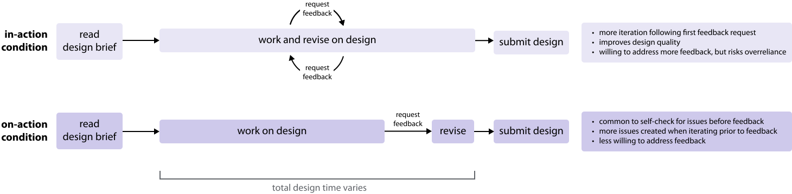

 Figure 1. Inspired by Schön's distinction between reflection-in-action and reflection-on-action, this paper investigates two timing conditions for feedback within the context of a single design session: in-action feedback available throughout the design session (top) and the more commonly available on-action feedback on an completed design draft after the current design session (bottom). Here we diagram the flow of our two conditions (left) and summarize our main study findings (left).
Advances in AI have opened up the potential for creativity tools to computationally generate design feedback. In a future when designers can request feedback anytime on demand, how would the timing of these requests impact novices’ creative learning processes? What are the tradeoffs of providing access to feedback throughout a design task (in-action feedback) versus only providing feedback after (on-action feedback)? We explored these questions through a Wizard-of-Oz study (N=20) using an interactive design probe, where participants could request feedback either throughout the design process or only after they complete a full draft. We found that in-action participants frequently request feedback, resulting in better improvements as indicated by a greater decrease in issues in their final design. However, we saw that in-action feedback can also risk users overly relying on feedback instead of engaging in more holistic self-evaluation. We discuss the implications of our insights on designing tools for creative feedback.
@inproceedings{e2024feedback,
author = {E, Jane L. and Yen, Yu-Chun Grace and Pan, Isabelle Yan and Lin, Grace and Li, Mingyi and Jin, Hyoungwook and Chen, Mengyi and Xia, Haijun and Dow, Steven P.},
title = {When to Give Feedback: Exploring Tradeoffs in the Timing of Design Feedback},
booktitle = {Proceedings of the 16th Annual ACM Conference on Creativity and Cognition},
url = {https://doi.org/10.1145/3635636.3656183},
doi = {10.1145/3635636.3656183},
venue = {Creativity & Cognition},
year = {2024},
}